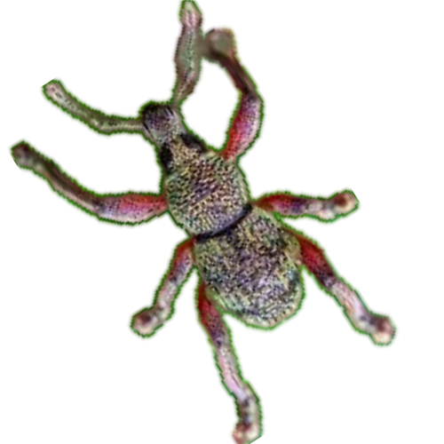

Mount Isarog Straight-Snouted Weevil
(Metapocyrtus isarogensis)
Facts:
- Family: Curculionidae (the true weevil or snout beetle family)
- Subfamily: Entiminae (broad-nosed weevils)
- Genus: Metapocyrtus — a group known for colorful, often metallic-bodied weevils native to the Philippines.
- Species: Metapocyrtus isarogensis — named after Mount Isarog where it is found.
- Habitat: Endemic to Mount Isarog, Philippines, a protected biodiversity hotspot.
- Distribution: Highly localized — only found around Mount Isarog on Luzon Island.
- Physical Traits: Typically exhibits metallic colors like green, blue, and gold, aiding in camouflage among leaves.
- Behavior: Primarily herbivorous — feeds on leaves and plant matter in the forest understory.
- Ecological Role: Important for nutrient recycling and forest health through their feeding activities.
- Conservation Status: Not yet assessed by IUCN, but habitat loss is a potential threat due to deforestation.
- Fun Fact: The striking metallic coloration is not pigment-based — it is created by microscopic surface structures reflecting light!